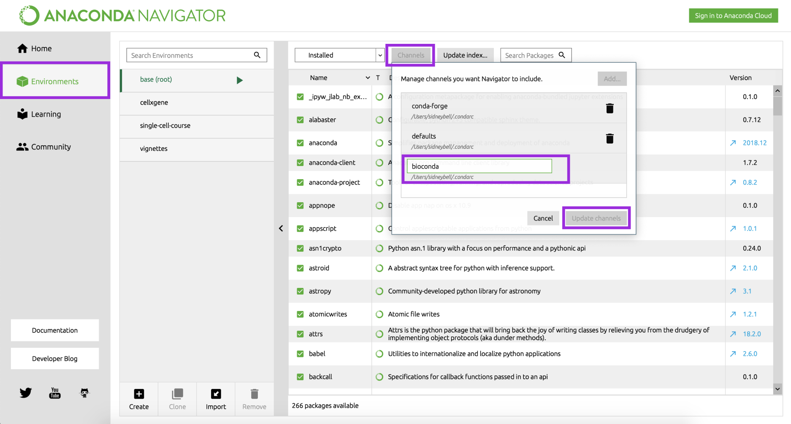
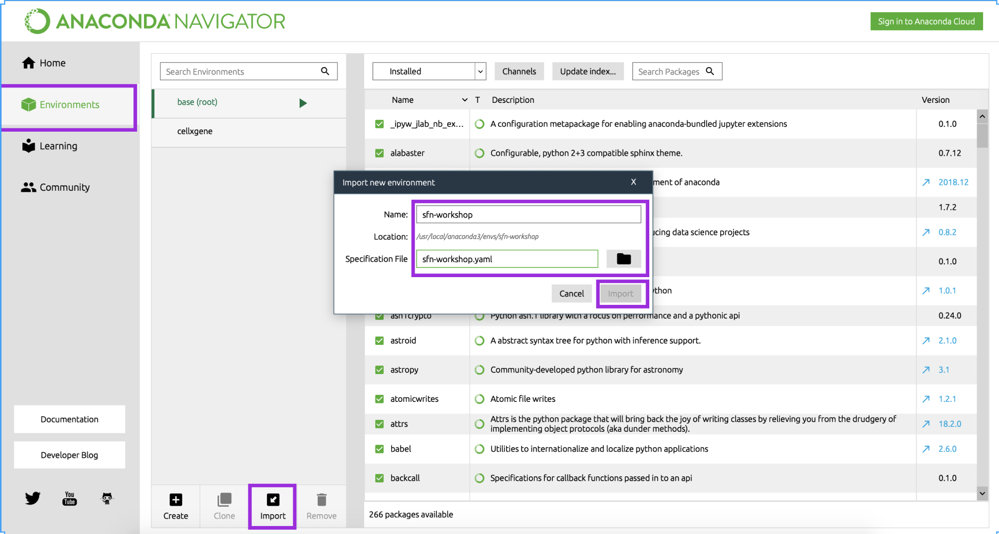
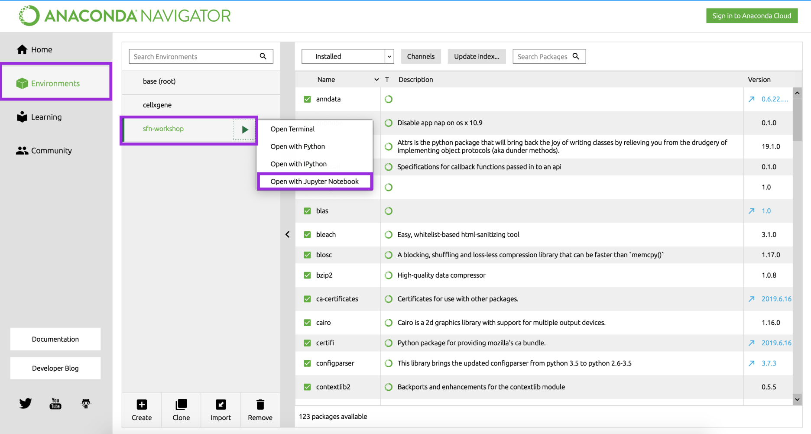
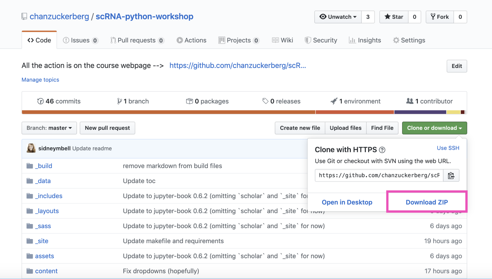

설정#
형식#
워크숍은 설명적인 토론과 실습이 번갈아 가며 진행됩니다. 완전히 참여하려면 모든 필수 패키지가 설치된 노트북을 가져오시는 것을 강력히 권장합니다. 또한 수업 시작 전에 설치 문제를 해결하는 데 도움을 드리기 위해 오전에 CZI 전산 생물학 직원과 함께하는 오피스 아워가 있습니다.
설치 가이드 (수업 전)#
1. Anaconda를 통해 Python 설치#
이전에 Python을 설치한 적이 있더라도 Python 버전 3용 Anaconda를 설치하십시오(OSX, Linux 및 Windows에서 사용 가능). 설치 마법사를 클릭하기만 하면 됩니다(사용자 정의 필요 없음, 모든 기본값이 괜찮음).
Anaconda는 _패키지 관리자_로, Python 설치 및 관련 패키지(특정 작업을 수행하기 위해 다른 사람들이 작성한 유용한 코드)를 조정하여 일관된 환경(분석을 수행할 때 컴퓨터가 참조하는 Python 버전 및 각 패키지의 코드 버전)을 갖도록 도와줍니다.
이제 응용 프로그램 폴더(Mac) 또는 시작 메뉴(Windows)에 “Anaconda Navigator” 아이콘이 표시되어야 합니다. 이 아이콘이 보이지 않으면 강사에게 문의하십시오!
2. 필수 패키지 설치 (Mac OS용)#
2A. Bioconda 설치#
Anaconda를 사용하는 모든 사람이 생물학자는 아닙니다. 결과적으로 일부 생물학 관련 패키지는 Bioconda 채널(패키지 모음)에서만 사용할 수 있습니다.
Anaconda Navigator를 엽니다.
왼쪽 사이드바에서
Environments를 클릭합니다.화면 상단 중앙에서
Channels를 클릭합니다.Add...를 클릭합니다.하단 텍스트 상자에
bioconda를 입력하고Enter를 누릅니다.Update channels를 누릅니다.
{kind=link}

2B. 강의 구성 파일 다운로드#
워크숍에 필요한 모든 Python 패키지(양일, 모든 트랙) 설치를 처리하기 위해 환경을 구성하는 방법을 Anaconda에 알려주는 구성 파일을 준비했습니다.
sfn-workshop.yml이라는 구성 파일을 여기에서 다운로드하십시오. 기억할 만한 곳에 저장하십시오.Anaconda Navigator를 엽니다.
왼쪽 사이드바에서
Environments를 클릭합니다.왼쪽 하단에서
Import를 클릭합니다.이름으로
sfn-workshop을 입력하고 방금 다운로드한sfn-workshop-mac.yaml파일을 찾습니다.Import를 누릅니다.
{kind=link}

2. 필수 패키지 설치 (windows용)#
2A. 강의 구성 파일 다운로드#
워크숍에 필요한 모든 Python 패키지(양일, 모든 트랙) 설치를 처리하기 위해 환경을 구성하는 방법을 Anaconda에 알려주는 구성 파일을 준비했습니다.
sfn-workshop.yml이라는 구성 파일을 여기에서 다운로드하십시오. 기억할 만한 곳에 저장하십시오.Anaconda Navigator를 엽니다.
왼쪽 사이드바에서
Environments를 클릭합니다.왼쪽 하단에서
Import를 클릭합니다.이름으로
sfn-workshop을 입력하고 방금 다운로드한sfn-workshop.yaml파일을 찾습니다.Import를 누릅니다.
2B. scanpy 설치 (단일 세포 트랙의 Windows 사용자만 해당)#
sfn-workshop옆에 있는 녹색 재생 버튼을 클릭하고 ‘터미널 열기’를 선택합니다.python3 -m pip install scanpy를 입력하고Enter를 누릅니다.
3. 설치 확인#
Anaconda Navigator를 엽니다.
왼쪽 사이드바에서
Environments를 클릭합니다.목록에서
sfn-workshop환경을 선택합니다. 몇 분 정도 걸릴 수 있습니다.나타나는 녹색
재생버튼을 클릭합니다.목록에서
Open with Jupyter Notebook을 선택합니다.
{kind=link}

상단에 “Jupyter”라고 표시되고 컴퓨터의 모든 파일이 나열된 브라우저 탭이 나타나야 합니다. 별거 아닌 것처럼 보일 수 있지만 시작하는 데 필요한 전부입니다! :)
이것이 작동하지 않으면 수업 전에 오피스 아워에 와서 CZI 전산 생물학 팀의 도움을 받으십시오.#
4. 강의 파일 다운로드#
이미징 트랙용#
단일 세포 트랙용#
내용 복제 또는 다운로드#
git으로 리포지토리를 복제하는 데 익숙하다면 그렇게 하는 것이 좋습니다. 그렇지 않으면 녹색 “복제 또는 다운로드” 버튼을 클릭하고 “zip 다운로드”를 선택하십시오. 자료에 대한 마지막 순간 업데이트가 있을 수 있으므로 수업 전날 밤에 이 작업을 수행하는 것이 좋습니다.
{kind=link}

5. 보너스: 재미있는 시각화 도구 설치 (선택 사항)#
터미널 창을 엽니다(Mac: 응용 프로그램 > 유틸리티 > 터미널, Windows: 시작 > Windows 시스템 > 명령 프롬프트).
이미징 트랙용:#
터미널 창에서 다음을 복사하여 붙여넣고
Enter를 누릅니다.python3 -m pip install napari
napari 설치를 테스트하려면 다음 터미널 줄에 napari를 입력하고 Enter를 누릅니다. 응용 프로그램 창이 열리는 것을 볼 수 있습니다.
단일 세포 분석 트랙용:#
터미널 창에서 다음을 복사하여 붙여넣고
Enter를 누릅니다.python3 -m pip install cellxgene
cellxgene 설치를 테스트하려면 다음 터미널 줄에 cellxgene를 입력하고 Enter를 누릅니다. 다음과 같은 내용이 표시되어야 합니다.
사용법: cellxgene [옵션] 명령 [인수]…
옵션:
–version 버전 표시 후 종료.
–help 이 메시지 표시 후 종료.
명령:
launch cellxgene 데이터 뷰어 시작.
prepare cellxgene에서 사용할 데이터 전처리.